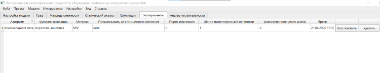
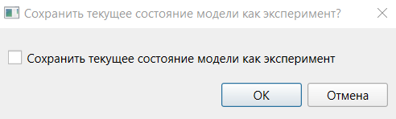

1. Работа с экспериментами осуществляется на вкладке экспериментов. Для перехода на эту вкладку с другой вкладки необходимо нажать на заголовок «Эксперименты».

2. Эксперименты представляют собой снимки модели в момент запуска симуляции и включают термы, все параметры факторов и связей и все параметры прогнозирования. На вкладке представлена таблица экспериментов, в которой приведены все параметры прогнозирования и время запуска симуляции. Таблица может быть отсортирована по столбцам аналогично таблице на вкладке статического анализа. По умолчанию таблица отсортирована по убыванию времени запуска симуляции.
3. При нажатии на кнопку «Восстановить» в строке эксперимента пользователю будет показан диалог загрузки эксперимента. При помощи данного диалога осуществляется выбор: сохранять текущее состояние модели как новый эксперимент или нет. По умолчанию флаг не установлен. В результате загрузки состояние модели будет обновлено, то есть будет осуществлён возврат к настройкам выбранной симуляции.

4. При нажатии кнопки «Удалить» эксперимент будет удалён из списка.